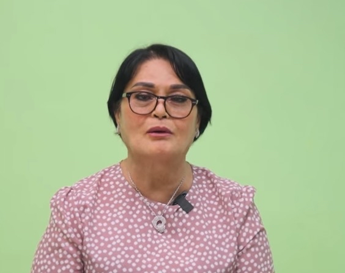

Barangay Carmen
Barangay officials are responsible for maintaining peace, order, and the welfare of the community. They help implement local programs, address residents' concerns, and provide basic public services. Through their leadership and dedication, barangay officials work to improve the quality of life and promote unity among community members.
Serving the people of Barangay Carmen.
COUNSILOR

COUNSILOR
COUNSILOR
COUNSILOR
COUNSILOR
SK CHAIRPERSON